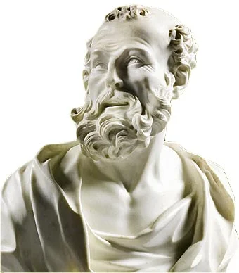
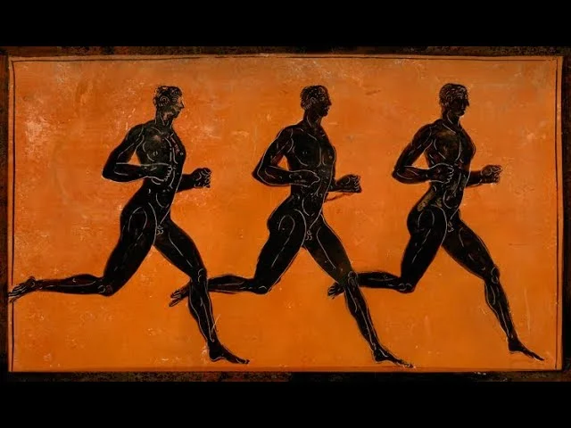
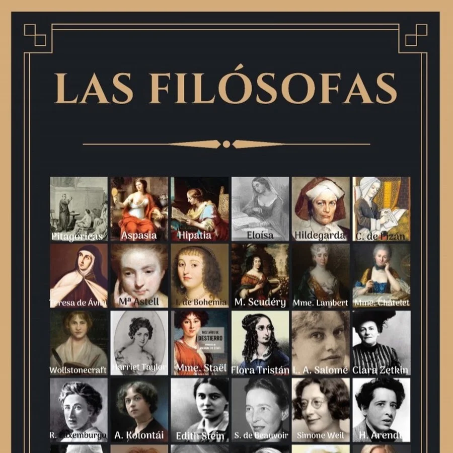
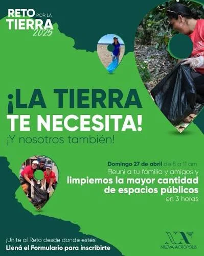
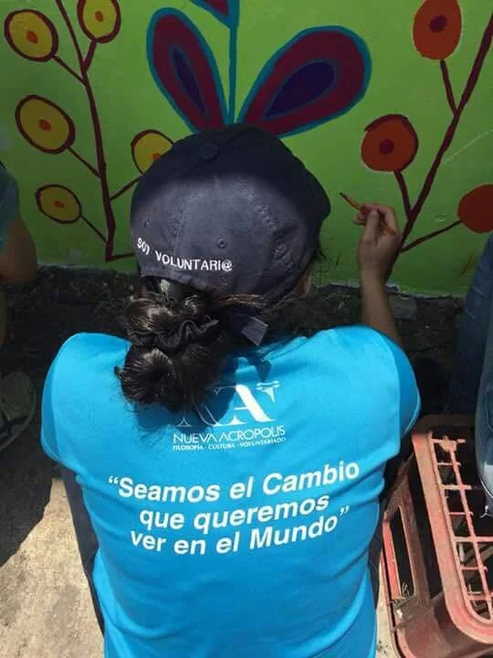
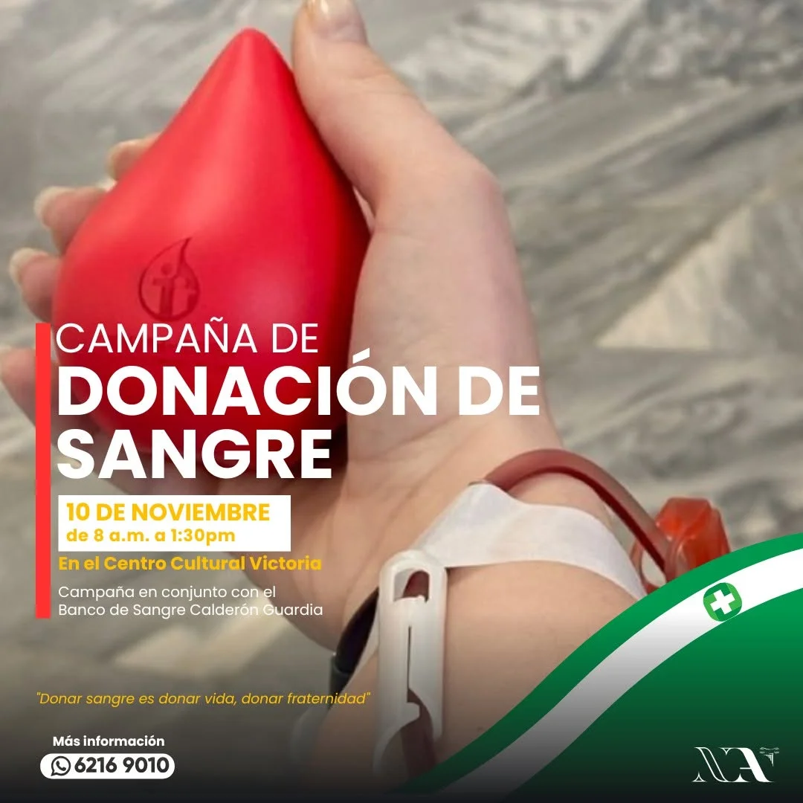
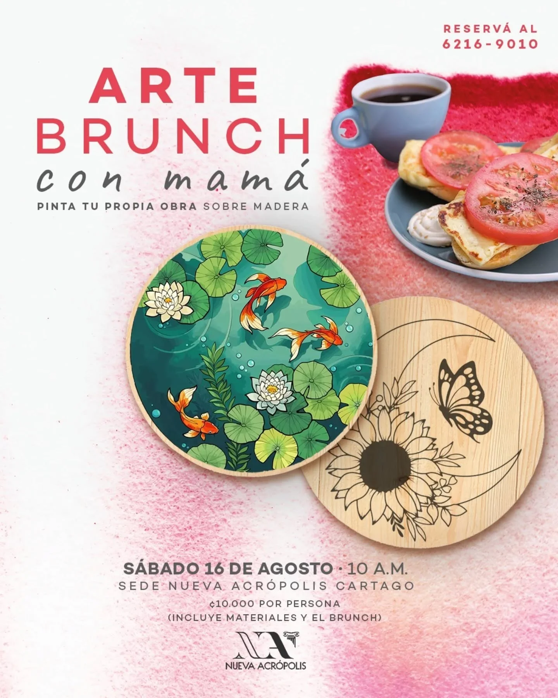
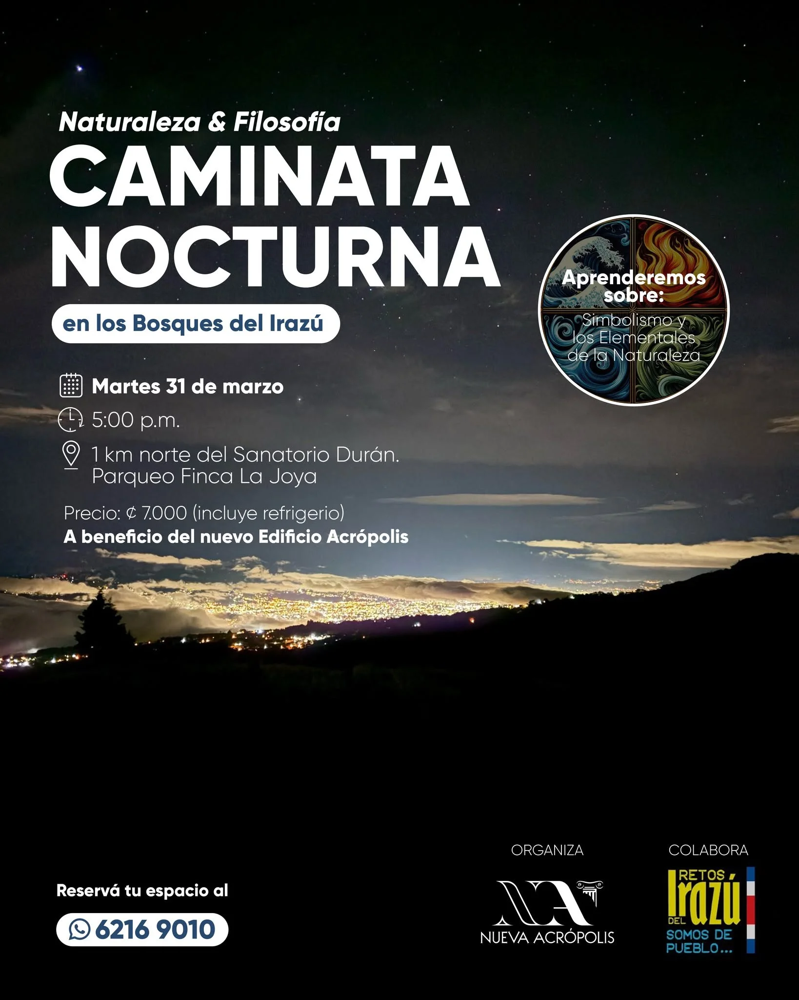
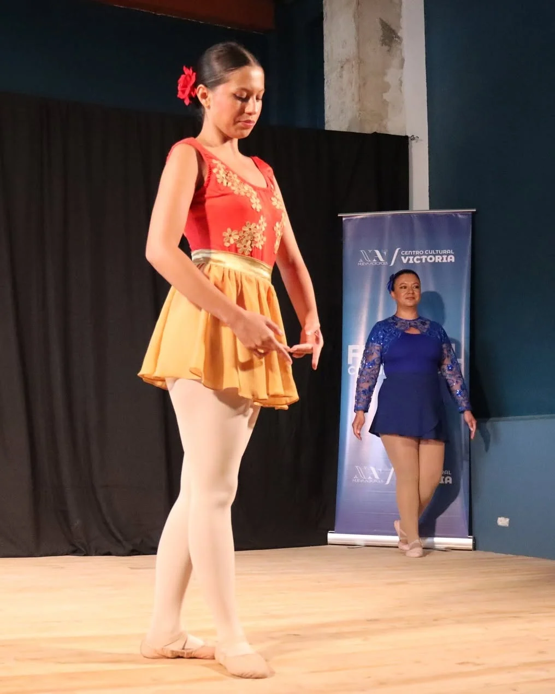

Demócrito: el filósofo que ríe
Descubrí el legado de uno de los grandes filósofos de la antigüedad y su visión optimista sobre la vida y la naturaleza humana.
Leer másDescubrí noticias, actividades, reflexiones y experiencias que nacen de la vida del Centro Cultural Victoria. Un espacio para compartir filosofía, voluntariado, cultura y eventos que inspiran el crecimiento personal y la vida en comunidad.

Descubrí el legado de uno de los grandes filósofos de la antigüedad y su visión optimista sobre la vida y la naturaleza humana.
Leer másUna reflexión sobre la batalla interior que enfrenta cada ser humano y el camino hacia una vida más consciente y equilibrada.
Leer más
Descubrí cómo la práctica deportiva puede convertirse en una herramienta para fortalecer el carácter, la disciplina y el trabajo en equipo.
Leer más
Un recorrido por la vida y el legado de mujeres que, con sus ideas, enriquecieron la filosofía y dejaron una huella en la historia.
Leer más
Una iniciativa de voluntariado que promueve el cuidado del ambiente mediante acciones concretas para proteger nuestro entorno.
Leer más
Una jornada de servicio donde el trabajo en equipo permitió embellecer un espacio público para el disfrute de toda la comunidad.
Leer más
Una jornada solidaria que invitó a la comunidad a donar vida mediante un acto de generosidad y compromiso con quienes más lo necesitan.
Leer másUna jornada de unión y esperanza para promover la prevención, el acompañamiento y la solidaridad con quienes enfrentan esta enfermedad.
Leer más
Una mañana especial para celebrar el Día de la Madre a través del arte, la creatividad y el compartir en familia.
Leer más
Una experiencia para reconectar con la naturaleza, fortalecer la convivencia y disfrutar de una noche diferente en comunidad.
Leer másUn encuentro para reflexionar sobre los ciclos de la naturaleza y compartir un espacio de fraternidad y agradecimiento.
Leer más
Una celebración del arte escénico donde niñas, niños y jóvenes compartieron su talento en un ambiente de creatividad y aprendizaje.
Leer másRespondemos algunas de las consultas más comunes sobre nuestros cursos, actividades y comunidad.
Descubrí talleres, eventos, voluntariado y momentos que forman parte de nuestra comunidad.

Escaneá para ver nuestro catálogo